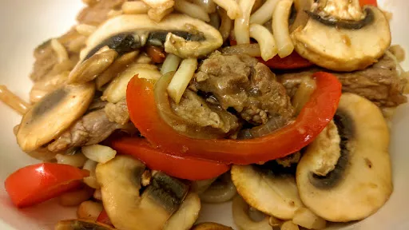

Five spice beef noodles
25 mins
Serves 2

Ingredients
-
1
tbsp oil
-
350
g rump, sirloin or topside beef, cut into stips
-
½
onion, sliced
-
1
small red or green pepper, thinly sliced
-
1
tsp grated fresh ginger
-
1
clove garlic
-
6
mushrooms, sliced
-
½
tsp five spice powder
-
1x pack fresh or ready-to-wok egg noodles
Sauce
-
¼
mug hoisin sauce
-
1
tbsp soy sauce
-
1
tbsp wine vinegar
-
1
tbsp water
Instructions
- Heat the oil in a wok. Add the beef stips and cook on a high heat for 2-3 minutes
. Remove from the pan and set to one side.
- Add the onion, garlic, pepper and ginger to the pan. Stir fry for 1-2 minutes
on high heat.
- Add the mushrooms and five spice powder. Cook for 1 minute
on high heat.
- Return the beef to the pan with the sauce ingredients and the nooddles. Cook on high heat for 1 minute
until everything is heated through.
- Serve immediately.
Nosh for graduates
Short Link
Long Link